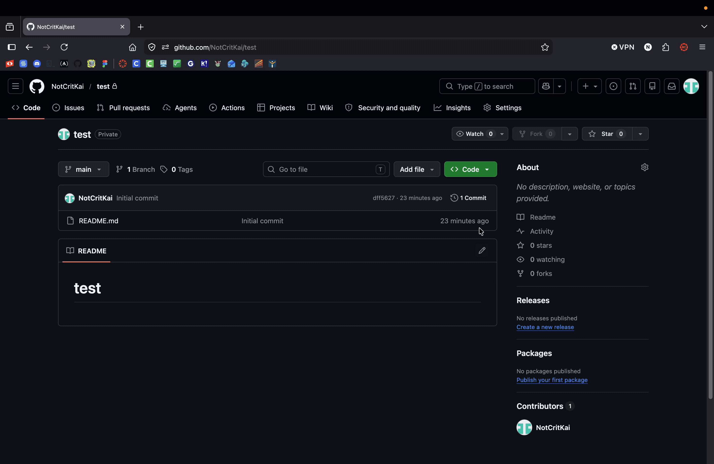
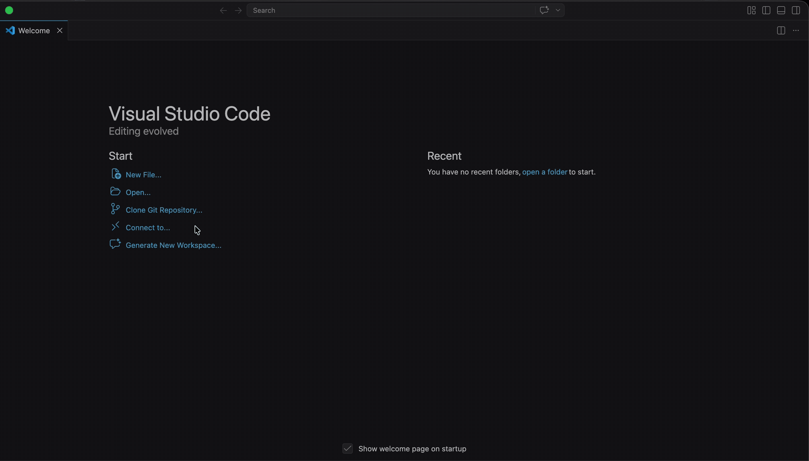

Setting It Up
| Cloning With A Link | Cloning By Signing In | |
|---|---|---|
| Step 1 | Go to GitHub and make an account | Go to GitHub and make an account |
| Step 2 | Create a repository | Create a repository |
| Step 3 | Click "Code" and copy the HTTPS link | Download VS Code |
| Step 4 | Download VS Code | Open VS Code |
| Step 5 | Open VS Code | Click "Clone Git Repository" |
| Step 6 | Click "Clone Git Repository" | Click "Clone From GitHub" |
| Step 7 | Paste the HTTPS link | Choose a repository to clone |
| Step 8 | Choose a folder location | Choose a folder location |


Pushing to GitHub
- Click on the Source Control icon in the left toolbar (looks like a branch)
- Click the folder icon (looks like a folder with a branch) to stage files
- Select the files you want to commit
- Click the circle with a line through it to stage changes
- Type a message summarising what you did
- Click "Commit"
- Click the sync icon (book with an upward arrow) to push